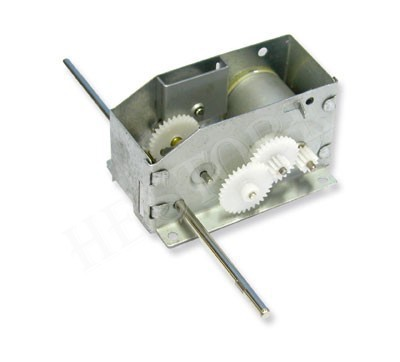
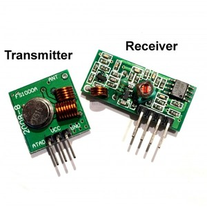

{kind=link}
{kind=link}
{kind=link}
{kind=link}

A robot képes egy fehér háttéren lévő sötétebb színű csík követésére, illetve távirányítóval átkapcsolható kézi irányításra is.
A vonal érzékelését két fotorezisztorral oldottam meg, amik mellett fehér 1-1 fehér LED is világít lefelé. A fotorezisztorok a robot alján, majdnem a legelején találhatóak. A fotorezisztorok egy előtétellenállással feszültségosztóként viselkednek, ebből következtetni arra, hogy alattuk éppen mi található. Induláskor megméri a két szenzor feszültségét, és ezek különbségéhez fog viszonyítani. Ha ettől kisebb vagy nagyobb különbséget mér, akkor fokozatosan növeli/csökkenti a kerekek sebességét. Ez a fajta útkövetés csak akkor működik helyesen, ha a csík a két szenzor között marad. A robot sebessége erősen le van korlátozva, mert ha a túllőne a vonalon, akkor általában nem tud visszatalálni. Sajnos a motorok vezérlése PWM jellel nem lineáris, ez okozza a videón is látható szakaszos mozgást. A kerekeket kb. 20%-os kitöltési tényezőjű jellel lehet megmozdítani, a max. sebességet 30%-ra állítottam.
A két kerék külön-külön vezérelhető. A sebesség és irány is beállítható. A motorok az áttétel miatt lassúak, de nagy a forgatónyomatékuk. hestore link

A vezérlőegység egy ATTINY24 mikroprocesszor (2 KB ROM, 128 B RAM), aminek a bemenetei: feszültségszintek a fotorezisztorokról (ADC), rádió RX (interrupt), reset gomb (pull-up input), kimenetei: állapotjelző LED, motor irány (logikai 0-1) és sebesség (PWM) mindkét motorra. forráskód
A motor tápja (6 V) és a vezérlő tápja (5 V) külön vannak választva. A mikroprocesszor így egy optocsatolón keresztül vezérli az L293D H-híd IC-t, amit egy inverter IC is kiegészít.
A távirányítón egy ATTINY13A dolgozik, ami egy joystick modulból kiolvassa az X, Y értékeket, és egy gomb lenyomását, ezt ellenőrzőösszeggel együtt elküldi egy 433 MHz-es rádiós modulon keresztül. forráskód
